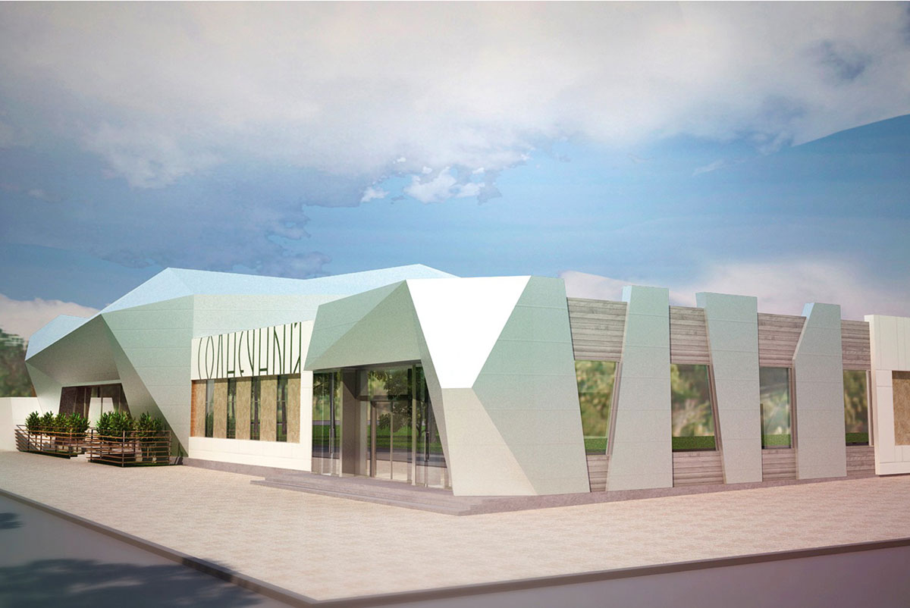
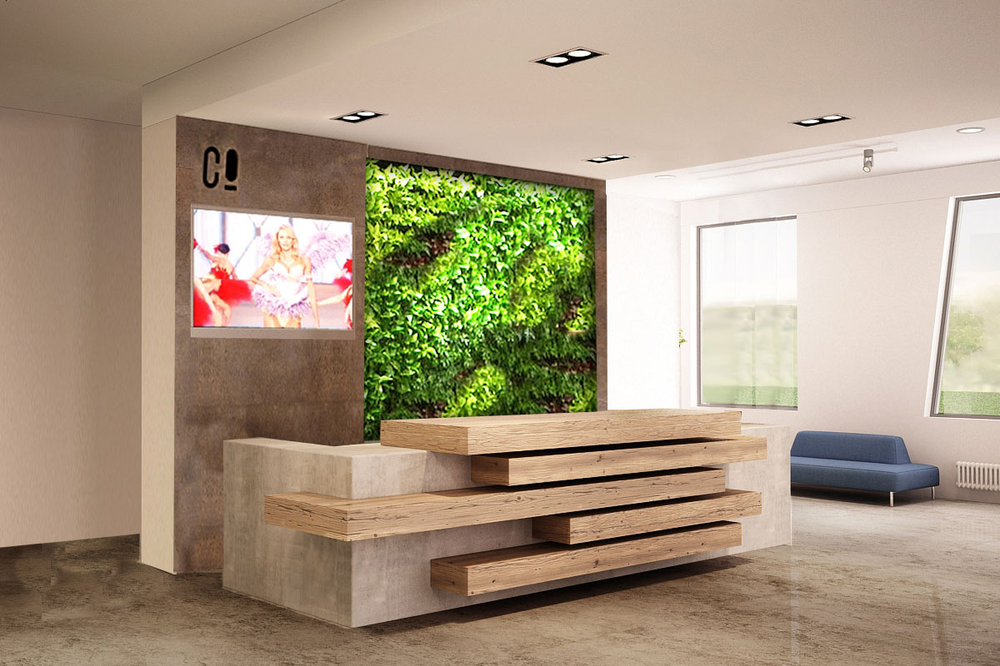
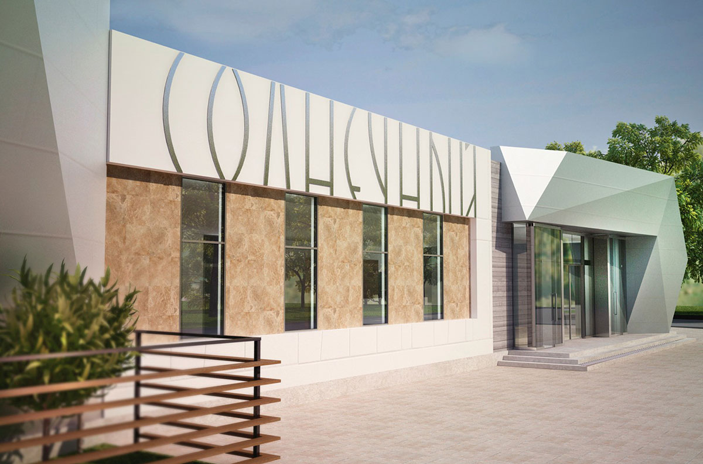
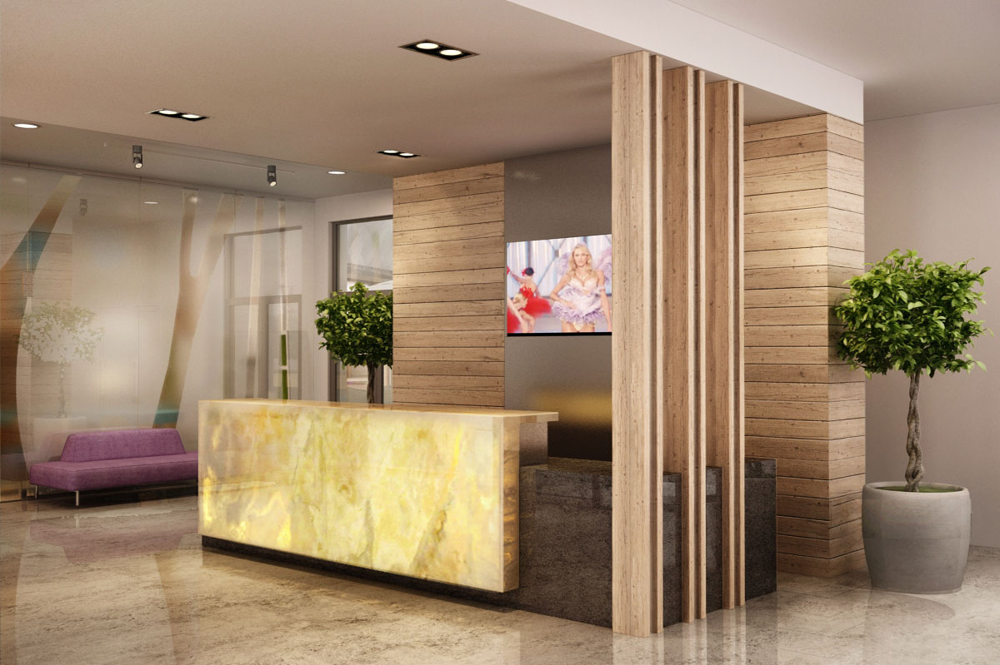
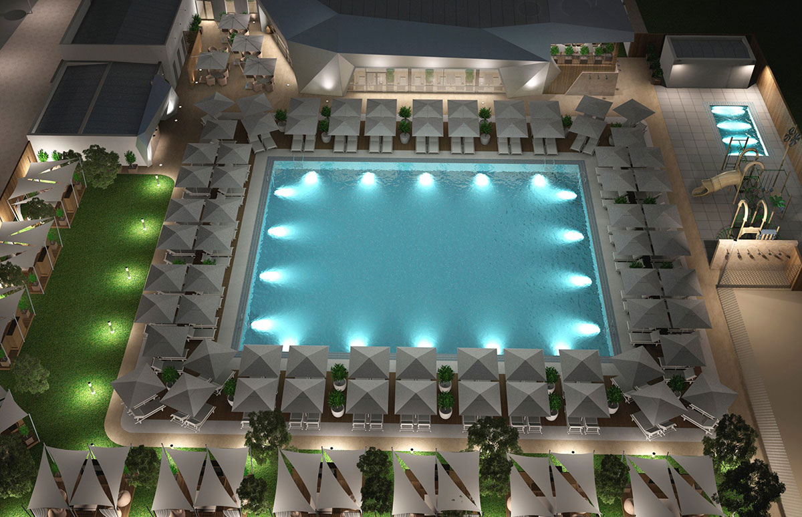

В десяти километрах от Ростова-на-Дону вы найдете море летних развлечений для взрослых и детей всех возрастов. Подогреваемые бассейны, площадки для пляжных игр, приватные беседки, диджей-бар и уютный ресторан с европейской кухней и детским меню. Загородный клуб «Солнечный» — ваше место под солнцем!
Экологичный интерьер и первоклассный сервис для поклонников семейного отдыха на природе с городским комфортом.
Не дожидаясь отпуска, вы можете зарядиться солнечной энергией в окружении ярких, интересных людей. Позагорать в шезлонге у бассейна или поиграть в пляжный волейбол.
Теплой компанией растянуться на «vip-матрасе» в беседке, а вечером поужинать на террасе и послушать выступления любимых музыкантов.
Детей и родителей порадует детский клуб с возможностью оставить ребенка на целый день.
Под присмотром опытных педагогов и аниматоров дети занимаются творчеством, строят песочные замки, катаются с горки в мини-бассейне и заняты множеством других интересных дел. Что бы вы ни выбрали, в «Солнечном» вас ждут идеальные летние выходные.
Территория клуба оборудована с учетом безопасности и потребностей детей: пеленальная комната со всем необходимым для мам и малышей, нескользящие покрытия и широкие съезды для колясок. Специальные зоны для курения. Кроме того, в комплексе есть удобства для людей с ограниченными возможностями.
СХЕМА КОМПЛЕКСА
Площадка для пляжного волейбола.
Детский бассейн с водной горкой 8х4 метра и площадка для игр.
Удобные шезлонги с зонтами у бассейна.
Сцена для проведения живых концертов.
Автопарковка на 100 мест для гостей клуба.
Вход в клуб, рецепция.
Ресторан с европейской кухней на 260 посадочных мест.
Душевые кабинки.
Бассейн 25х20 метров с подогревом в мае и сентябре.
Детский клуб с аниматорами и опытными педагогами.
Автопарковка на 100 мест для гостей клуба.
Лаунж террасса с видом на комплекс и персональным обслуживанием.
Приватные беседки на 6-8 человек с большим матрасом.
Лучшие места под солнцем бронируйте заранее по телефону: 8 (863) 295-51-11
Мы ждем вас с 9:00 до 00:00, с 1 июня до 1 ноября